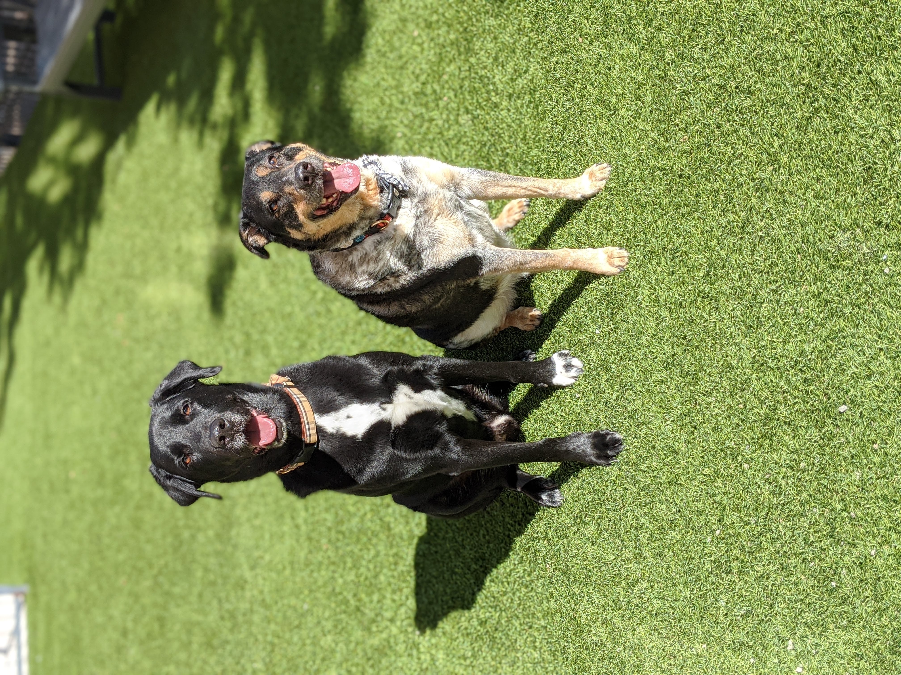

All about Dogs!

There are many types of dogs, let me name a few for you!
- German Shepherds
- Golden Retrievers
- Beagles
- Bull Dogs
- Great Danes
- Poodles
- Huskies
- Pit Bulls
- Boxers
- and Pugs!
These are just some breeds of dogs; there are hundreds more.
Fun Facts:
- There are more than 150 dog breeds, divided into 8 classes: sporting, hound, working, terrier, toy, non-sporting, herding, and miscellaneous.
- The most popular dog name is Max, followed by Molly, Sam, Zach, and Maggie.
- Dogs can vary in size from a 36-inch (150+ lb.) Great Dane to a 2 lb. Chihuahua.
- Puppies and kittens can be adopted as early as 8 weeks of age.
- About 1/3 of dogs surrendered to shelters are purebred.
- Dogs sweat through the pads of their feet, not by salivating.
- Dogs have over 200 million scent receptors in their noses.
- The term "dog days" has nothing to do with dogs; it dates back to Roman times.
How to Treat Your Dog:
- Proper owners should walk their dogs every day.

- Dogs should be bathed at least once a month (some breeds require weekly baths).

Food: Feed your dog at least twice a day, unless advised otherwise by a vet.